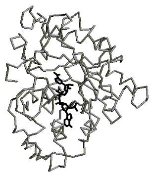
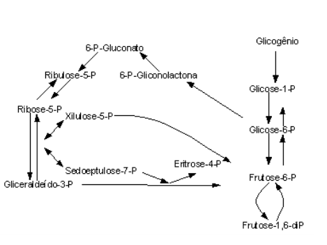

12 Via das Pentoses
12.1 Introdução
A via das pentoses existe pra quem acredita que só a glicose ou a frutose é que podem ser utilizadas como combustível. Ambas constituem açúcares de seis carbonos, ou 6C. Mas e os outros açúcares do organismo ? Aqueles com 4C, 5C, ou 7C ? Eles existem, e também podem ser utilizados como fonte de combustível para a célula produzir ATP. Neste caso, a via das pentoses se encaixa bem na produção desses açúcares. Uma vez formados, podem entrar no meio da rota da glicólise, para a produção de ATP. Mas veja bem: diferentemente da glicólise, do ciclo de Krebs e da cadeia respiratória, a via das pentoses não produz ATP.
Produz açúcares que podem entrar nas vias de oxidação mencionadas, para, estas sim, produzir ATP. Além disso, alguns desses açúcares são importantíssimos para outras rotas. É o caso da ribose, um açúcar 5C que participa estruturalmente do DNA e RNA, as moléculas de informação genética das células.
Finalmente, a via das pentoses sintetiza uma coenzima vital para a degradação de drogas no organismo, para proteção contra infeção bacteriana, para proteção contra os radicais livres, e para a produção de gorduras: o NADPH. Ele se parece com o NADH, aquela coenzima que carrega elétrons para a cadeia respiratória. A única diferença é que possui um grupo fosfato a mais. E isso muda tudo, pois o NADH não consegue fazer nada do que faz o NADPH. O NADH serve pra fazer ATP, enquanto que o NADPH da via das pentoses serve para protejer o organismo. A via das pentoses, assim como várias outras rotas do metabolismo, também precisa de algumas enzimas, vitaminas e minerais.

12.2 Detalhes
Também conhecida como Rota das Hexoses Monofosfato, a via das pentoses tem importância metabólica na produção de monossacarídios de 4 a 7 carbonos, entre os quais um precursor de nucleotídios, participante dos ácidos nucléicos e de ATP (ribose-5-P), e do redutor biológico NADPH, utilizado em detoxificações, eliminação de radicais livres e desinfeção. Localizada no citosol, a via das pentoses tem importância singular em tecidos tais como fígado, glândula mamária, córtex adrenal, eritrócidtos, córnea e cristalino.
A produção de açúcares de número de carbonos intermediários envolve reações de transaldolases (transferência de 3C) e de transcetolases (transferência de 2C), estas últimas exigindo a participação de vitamina B1 (tiamina). Niacina também é requerida nas etapas iniciais. As etapas irreversíveis da via das pentoses envolve uma desidrogenação inicial de glicose-6-P pela G6PD, liberando o primeiro NADPH, hidrólise de fosfogliconolactona, hidratação desta para gliconato, e formação de ribulose-5-P, esta última liberando a segunda molécula de NADPH e um CO2. Este último, advindo do carbono-1 da glicose-6-P, permite às reações adjacentes a síntese de carboidratos 5C. A partir deste trajeto unidirecional, a via das pentoses se ramifica para através de transaldolações/transcetolações, para a produção de monossarídios de 3C (gliceraldeído-3-P), 4C (eritrose-4-P), 5C (ribose-5-P, xilulose-5-P), e 7C (sedoeptulose-7-P). A partir deste ramo, também é possível uma conexão metabólica com a glicólise e gliconeogênese, através da frutose-6-P comum a ambas.
O saldo de metabólitos não envolve consumo ou produção de ATP, mas sim de um agente redutor similar ao NADH, o NADPH, distinto daquele pelo grupo fosfato adicional, e que pode ser empregado na fagocitose de corpos estranhos, na biossíntese de ácidos graxos, no sistema microssomal P-450 de combate à toxicidade por drogas, álcool e agentes neoplásicos, e na eliminação de formas ativas de oxigênio, os radicais livres.
Estes podem ser metabolicamente formados por redução de elétrons a partir do O2 molecular, originando sequencialmente o superóxido (O2* ativado), o peróxido de hidrogênio (H2O2), o radical hidroxila (OH* ativado) e, finalmente, a H2O. Neste caso, o NADPH entra como coenzima da glutationa peroxidase, a qual converte bidirecionalmente H2O e H2O2, dependendo da necessidade, se para eliminação do peróxido, como efeito protetor, ou de bactérias fagocitadas, pela produção daquele. NADPH também entra na oxidação de compostos aromáticos, esteróis, álcool e drogas, pelo sistema microssomal P-450 e pelo complexo da monooxigenase.

12.3 Aplicação
As plantas superiores utilizam tanto a glicólise como a via das pentoses para oxidação de compostos e produção de CO2, sendo a primeira a principal via do catabolismo de carboidratos em pêssego, pepino e várias sementes. Além disso, a via das pentoses participa da síntese de monossacarídios especiais dos vegetais, tais como ribulose, arabinose, xilulose, ribose, galactose, e manose.
A conhecida vitamina C, ácido deiidroascórbico, envolvida na detoxificação de radicais livres, é produzida através de um rota biossintética vegetal que envolve o ácido glicurônico, um intermediárioa da via das pentoses, a partir de UDP-galactose. A vitamina C, de rota ausente em humanos, cobaias e peixes, é sintetizada a partir de glicuronato, um intermediário da via das pentoses.
Devido às características de atuação do NADPH, algumas moléstias estão associadas com defeitos em sua síntese, entre as quais a deficiência de G6PD (glicose-6-P desidrogenase), a mais comum das doenças hereditárias em seres humanos, atingindo milhões de indivíduos no globo, e responsável por anemia hemolítica. Além desta, granulomatose crônica (infeções piogênicas crônicas e severas, por deficiência da NADPH oxidase), catarata e nefropatia, também figuram como exemplos.
